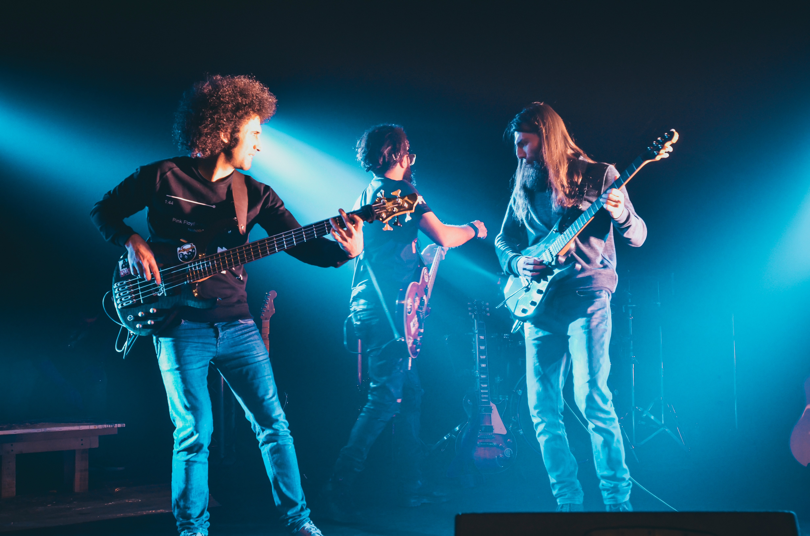

Velvet Child
July Fourth 9pm
Velvet Child is a three-piece band from Los Angeles that combines elements of 70s rock, funk, and soul with a modern twist. Their signature sound is driven by the sultry vocals of lead singer, Jade, and the groovy basslines of bassist, Max. Guitarist, Noah, shreds with wild abandon, adding a heavy dose of rock and roll to the mix. With influences ranging from Led Zeppelin to Anderson .Paak, Velvet Child creates a unique blend of vintage and contemporary styles that's impossible not to dance to. Their high-energy live performances have earned them a loyal following in LA, and they're poised to take the world by storm.
Learn More Here:
Previous Artist
Next Artist